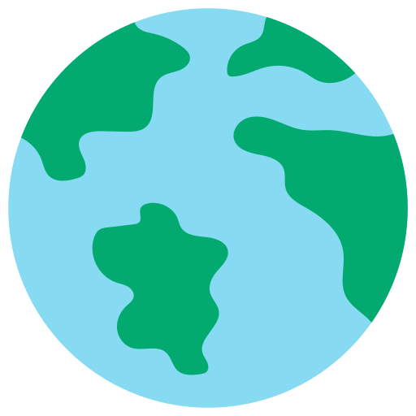
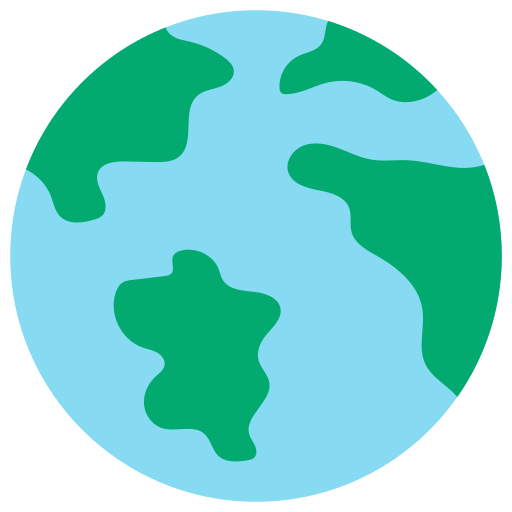

Ana Sayfa
Ana Sayfa Plastiğin Tarihçesi
Plastiğin Tarihçesi Plastiğin Zararları
Plastiğin Zararları Plastik Türleri
Plastik Türleri
Pet şişeler, naylon poşetler, kısacası hammaddesi plastik olan ürünler çevremize ve doğamıza ne kadar zarar veriyor?
(Kullanılan kaynak: zorlu.com.tr)
İklim değişimi ile beraber plastik kirliliği, bugün en büyük iki çevre sorunundan biri. Evrensel çapta acil önlem ve eylem durumuna geçilmesi gereken bu sorunlardan, plastik kirliliğini ele aldık ve doğaya verdiği zararlar üzerinde durduk.
 En gözlenebilir zarar: Yedinci Kıta
Bu kadar plastiğin nereye gittiği sorusu hemen hepimizin aklındandır değil mi? Fakat cevap sanıldığı kadar gizemli değil. Bugün, üretilen plastiklerin atıklarının büyük bir bölümü denizlere ve oradan da okyanuslara yayılarak, devasa yığınlar halinde çözülmeden durmaktalar. Bu atıklar o kadar geniş bir kitle oluşturdu ki Dünya’nın ‘’yedinci kıtası’’nın plastik atıklardan oluşacağı söylendi; 7 milyon ton ağırlığında yüzen bir plastik...
 Doğal hayatın en büyük katili
Doğal hayatın en büyük katili
Kullandığımız tüm plastik malzemelerin denizlere dökülmesi, dolaylı olarak bizi etkilese de aslında ilk zararlı etkiyi denizde yaşayan canlılara veriyor. Suda yaşayan binlerce canlı bu plastik atıklardan dolayı ya kalitesiz bir yaşam sürüyor ya da yaşamını sürdüremiyor. Plastik poşetlere, ağlara, konserve kaplarına takılan, sıkışan binlerce canlının yanı sıra, mevcut temiz suyu da pisleten bu atıklar, iilerleyen yıllarda bugünküyle eş oranla artış göstermeye devam ederse, birçok deniz canlısının nesli tükenecek.
 Ekosistemin temeli mercan resifleri neden ölüyor?
Ekosistemin temeli mercan resifleri neden ölüyor?
Plastik kirliliğinden en fazla etkilenen deniz canlılarından biri de mercan resifleridir. Ekosistem için oldukça önemli canlılar olan mercan resifleri, plastik atıkların ürettiği bakterilerden ötürü hastalanarak hayatlarını kaybediyor. Bu canlıların ölümleri, besin zincirini doğrudan etkileyerek pek çok canlının, deniz yaşamının yok olmasına neden olacak. Özetle, tüm canlıları etkileyecek bir zincirin halkasını kopmadan kurtarmak, hâlâ elimizde.
 Sayılarla plastik kirliliği ve zararlı etkileri
Sayılarla plastik kirliliği ve zararlı etkileri
İklim değişimi ile beraber plastik kirliliği, bugün en büyük iki çevre sorunundan biri. Evrensel çapta acil önlem ve eylem durumuna geçilmesi gereken bu sorunlardan, plastik kirliliğini ele aldık ve doğaya verdiği zararlar üzerinde durduk.
 En gözlenebilir zarar: Yedinci Kıta
Bu kadar plastiğin nereye gittiği sorusu hemen hepimizin aklındandır değil mi? Fakat cevap sanıldığı kadar gizemli değil. Bugün, üretilen plastiklerin atıklarının büyük bir bölümü denizlere ve oradan da okyanuslara yayılarak, devasa yığınlar halinde çözülmeden durmaktalar. Bu atıklar o kadar geniş bir kitle oluşturdu ki Dünya’nın ‘’yedinci kıtası’’nın plastik atıklardan oluşacağı söylendi; 7 milyon ton ağırlığında yüzen bir plastik...
Doğal hayatın en büyük katili
Kullandığımız tüm plastik malzemelerin denizlere dökülmesi, dolaylı olarak bizi etkilese de aslında ilk zararlı etkiyi denizde yaşayan canlılara veriyor. Suda yaşayan binlerce canlı bu plastik atıklardan dolayı ya kalitesiz bir yaşam sürüyor ya da yaşamını sürdüremiyor. Plastik poşetlere, ağlara, konserve kaplarına takılan, sıkışan binlerce canlının yanı sıra, mevcut temiz suyu da pisleten bu atıklar, iilerleyen yıllarda bugünküyle eş oranla artış göstermeye devam ederse, birçok deniz canlısının nesli tükenecek.
Ekosistemin temeli mercan resifleri neden ölüyor?
Plastik kirliliğinden en fazla etkilenen deniz canlılarından biri de mercan resifleridir. Ekosistem için oldukça önemli canlılar olan mercan resifleri, plastik atıkların ürettiği bakterilerden ötürü hastalanarak hayatlarını kaybediyor. Bu canlıların ölümleri, besin zincirini doğrudan etkileyerek pek çok canlının, deniz yaşamının yok olmasına neden olacak. Özetle, tüm canlıları etkileyecek bir zincirin halkasını kopmadan kurtarmak, hâlâ elimizde.
Sayılarla plastik kirliliği ve zararlı etkileri
- Her yıl yaklaşık 5 trilyon plastik poşet üretiliyor ve her yıl yaklaşık bir milyar kuş ve memeli hayvan plastik atıkları sindirdiği için hayatını kaybediyor.
- Plastik kirliliğinden etkilenen canlı türü sayısı yaklaşık 400’dür.
- 1950’den bugüne 8.3 milyar tondan fazla plastik üretildi ve bu plastiklerin %60’ı atık sahalarına veya doğrudan çevreye bırakıldı.
- 2015 yılı itibarıyla 6300 ton plastik atık ortaya çıktı ve bu atıkların yalnızca %9’u geri dönüşüme uğradı.
- Önlem alınmadığı sürece, plastik atıkların 2050 yılına kadar 56 milyar ton karbon salımına sebep olacağı tahmin ediliyor.
- Deniz balıklarının hemen hemen yarısının midesinde mikroplastik partiküller bulunuyor.
- Doğada bozulmaları için gereken süre denizde 400 yıl iken, karada 800 yıl. Bu bozulma sırasındaysa zaten tüm zararlı materyaller toprak ve suya geçiyor.
- Bütün bunları göz önünde bulundurarak plastik kullanımını azaltmamız, hatta mümkünse hiç plastik kullanmamamız gerekiyor.
- 1 cam şişeyi tekrar tekrar kullandığınızda, 1 yılda 240'dan fazla plastik şişenin satılmasını ve kullanılmasını önlemiş oluyorsunuz.